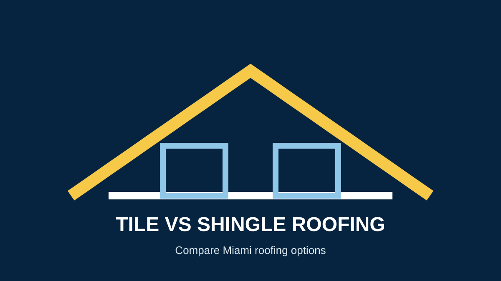

Tile Roof vs. Shingle Roof: Which Is Better for Miami?
When homeowners compare tile vs shingle roofing in Miami, the right answer depends on budget, structure, appearance, expected service life, maintenance and the roofing system required for the property.
Quick comparison
| Factor | Asphalt shingles | Tile |
|---|---|---|
| Initial cost | Often lower | Often higher |
| Weight | Generally lighter | Heavier; structure may need evaluation |
| Service life | Often shorter | Often longer when properly installed and maintained |
| Maintenance | Individual materials can require repair | Broken tiles and underlying components may need attention |
| Miami considerations | Product rating and installation matter | Fastening, underlayment and structural considerations matter |
Advantages of asphalt shingles
- Lower initial material cost is common.
- Many styles and colors are available.
- Individual damaged areas can often be repaired.
- Lighter weight can simplify some projects.
Advantages of tile roofing
- Tile can offer a long service life when the complete system is correctly installed and maintained.
- Tile is popular on many South Florida homes for appearance and durability.
- Different tile products offer different performance characteristics.
Do not compare materials on price alone
Compare the complete installed system: decking condition, underlayment, flashing, ventilation, fastening, permits, product approvals and labor. Miami-Dade's Product Control resources are useful when researching approved roofing products and systems.
Which roof is right for your home?
A roofing professional should consider the existing structure, roof design, local requirements, budget and long-term plans. Our Miami roof replacement service can help compare options for the property.
Frequently asked questions
Is tile more durable than shingles?
Tile can have a longer service life than many shingle products, but performance depends on the exact product, installation and maintenance.
Is tile always more expensive?
Tile commonly has higher material and installation costs, but the actual project price depends on the roof and selected system.
Can any house have a tile roof?
Not automatically. Because tile is heavier, the existing structure and installation requirements should be evaluated.
Compare Roofing Options →Sources and further reading
- Miami-Dade County — Product Control
- GAF — Roofing Resources
- Owens Corning — Roofing Resources
- National Roofing Contractors Association
Related guides
Roof replacement cost · Roof lifespan · Miami-Dade roofing requirements